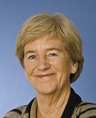

Sig-Britt (Sigbrit) Monica Franke
Folkskollärare 1966, Fil.dr,, docent 1978, professor 1981, univ.rektor, univ.kansler.
| Född: | 1942-08-16 Laver, Älvsby fs, Älvsbyns sn. [1] | Nedkomstort: Piteå länslasarett enl. avis därifrån 1942-08-22 |
|---|
| Vigsel: | 1966-06-24 I Kristinebergs kapell, Björksele fs, Lycksele kn. [2] | Fotografering och Bröllopsmiddag i Malå. |
|---|
| Barn: |
|---|
| Jenny Franke Wikberg (1971 - ) |
| Sara Franke Wikberg (1976 - ) |
Noteringar
Sigbrit Franke, under en period Sigbrit Franke-Wikberg är en svensk akademiker och pedagog.
Franke är gästprofessSigbrit Franke är professor i pedagogik vid Umeå universitet. Under 90-talet var hon rektor för universitetet varefter hon utsågs till universitetskansler och chef för Högskoleverket. Hon har ansvarat för flera utredningar, t.ex. om ny lärarutbildning och hon företräder staten i avtalsförhandlingarna om ALF-medel.
2004 invaldes Sigbrit Franke som ledamot av Kungliga Ingenjörsvetenskapsakademien.or vid KTH Learning Lab. Hon var Sveriges universitetskansler 1999–2007 och rektor för Umeå universitet 1992–1998. Hennes forskargärning är främst inriktad på utvärdering av kvalitet i utbildningssystem. Hon är utbildad folkskollärare och har en psykologexamen från Umeå universitet.
Franke har varit Umeå universitet trogen och disputerade där i pedagogik på avhandlingen "Utvärdering av universitetsundervisning". År 1978 fick hon docenttitel, tillförordnad professor i pedagogik blev hon 1979 och 1982 installerades hon som professor i pedagogik.[2] Under 1980-talet har hon även varit gästprofessor i Berkeley.
Som högskoleadministratör har Franke innehaft uppdrag som prefekt, dekan, prorektor och 1992–1998 rektor för Umeå universitet. Hon efterträdde Stig Hagström som universitetskansler och chef för Högskoleverket 1999 och blev då Sveriges första kvinnliga universitetskansler.
Franke har gjort sig känd som en stark förespråkare för ökat studentinflytande och under hennes mandatperiod som universitetskansler har flera nya laginitiativ ökat studenternas rättigheter till insyn och deltagande i lärosätenas beslut. Förändringarna har följts upp genom "20 åtgärder för att stärka studenters rättssäkerhet" och i samband med den så kallade "Frankingen". Den senare är en utvärdering eller rankning av svenska lärosäten, som (f)rankats inom de tre områdena jämställdhet, studentinflytande och social och etnisk mångfald. Frankingen representerar Frankes politiska agenda väl. "Frankingen" framfördes som ett alternativ till den rankning av universitet som är vanlig i bland annat USA, och man kan notera att "Frankingen" bygger på helt andra kriterier än de som vanligen utnyttjas i sådana rankningar (vanligtvis sådant som professorstäthet, tillgång till undervisnings- och forskningsresurser, forskningskvalitet mätt i publikationer och de utexaminerades arbetslöshet och medellön).
Som universitetskansler har Franke gjort en rad medieutspel, inte minst genom debattartiklar i nationell press. Hon har gjort sig känd för att våga stå emot regeringen och säga obehagliga sanningar, senast i samband med Högskoleverkets granskning av lärarutbildningen våren 2005. Högskoleverkets kvalitetsutvärderingar har ofta medfört kritik, vilka Franke framfört utan större hänsyn till sin arbetsgivare. På så sätt har respekten för Franke växt inom såväl lärarkollegier som studentorganisationer, även om kritiska röster inte saknats.
Medicinska studentkåren vid Umeå universitet utsåg 2003 Franke till hedersmedlem. Av kårfullmäktiges beslut framgår att det framför allt är Frankes lokala och nationella arbete med formellt och informellt studentinflytande liksom hennes engagemang i mångfalds- och jämställdhetsfrågor som utgör grunden för hennes hedersmedlemskap. I samband med Umeå universitets årshögtid 1999 tilldelades hon även universitetets förtjänstmedalj med en liknande motivering.
Utmärkelser och ledamotskap
1999 – Hedersledamot vid Norrlands nation
1999 – Umeå universitets förtjänstmedalj[3]
2004 – Ledamot av Ingenjörsvetenskapsakademien
Personhistoria
| Årtal | Ålder | Händelse |
|---|
| 1942 |
|
Födelse 1942-08-16 Laver, Älvsby fs, Älvsbyns sn [1] |
| 1966 |
23 år |
Vigsel Karl Torsten Vikberg 1966-06-24 I Kristinebergs kapell, Björksele fs, Lycksele kn [2] |
| 1971 |
|
Dottern Jenny Franke Wikberg föds 1971 Umeå, Umeå sfs, Umeå kn |
| 1976 |
|
Dottern Sara Franke Wikberg föds 1976 Sri Lanka |
| 1979 |
36 år |
Modern Sigrid Helmina Gustafsson dör 1979-07-05 Kronåsv 31, Kristineberg, Björksele fs, Lycksele kn [3] |
| 1984 |
42 år |
Fadern Helmer Gerhard Franke dör 1984-10-19 Skolv 4 B, Kristineberg, Björksele fs, Lycksele kn [4] |
| 2009 |
66 år |
Maken Karl Torsten Vikberg dör 2009-04-14 Trastvägen 3 B, Umeå, Maria fs, Umeå kn [5] |
| 2012 |
69 år |
Systern Saga Tonny Sibylla Franke dör 2012-03-09 Hartvigsgatan 14 K, Umeå, Umeå lfs, Umeå kn [6] |
Dokument
Källor
| [1] | SCB Födda BD Älvsby 131/1942 |
| |
| | |
| [2] | Sigbrit Franke |
| |
| | |
| [3] | RTB 79, SPAR 80, SDB7_02990773 |
| |
| | |
| [4] | RTB 84, SPAR 90, SDB7_02918728 |
| |
| | |
| [5] | FK 13, man91, SDB7_05150912 |
| |
| | |
| [6] | FK 13, man91, SDB7_03869135, SDB7_05143173 |
| |
|
|  |
| Sigbrit Franke är professor i pedagogik vid Umeå universitet. Under 90-talet var hon rektor för universitetet varefter hon utsågs till universitetskansler och chef för Högskoleverket. |
| |
 |
2012. Sigbrit Franke är ordförande i Utbildningsvetenskapliga kommittén.
Bild: Moa Karlberg
pedagogiskamagasinet.se/har-bestams-vem-som-far-forska/
|
|

{kind=link}